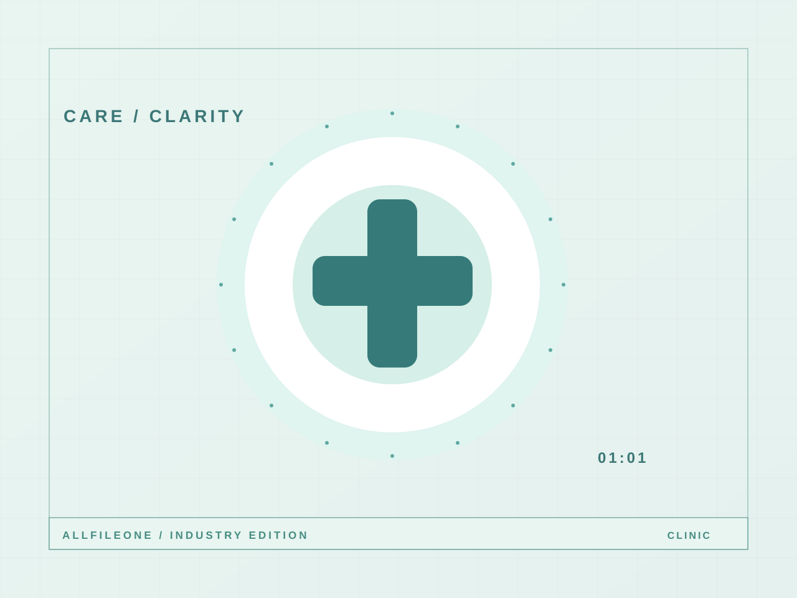

내과 진료
의료진·진료과목 안내
진료과목, 의료진, 운영시간과 찾아오는 길을 알아보기 쉽게 구성합니다.
서비스 둘러보기
진료과목, 의료진, 운영시간과 찾아오는 길을 알아보기 쉽게 구성합니다.
업종에 맞는 핵심 콘텐츠와 기능을 예시로 구성했습니다.
의료진·진료과목 안내
진료 시간·오시는 길
외부 예약 연결
고객이 궁금해하는 정보를 먼저 보여주고, 다음 행동을 쉽게 선택할 수 있도록 디자인합니다. 화면에 보이는 설명과 데이터는 모두 데모용 가상 콘텐츠입니다.
아닙니다. 가상 브랜드로 제작한 올파일원 웹스튜디오의 디자인 시연용 샘플입니다.
아닙니다. 샘플 사이트의 버튼은 화면 내 데모 동작만 하며 실제 서버로 정보를 보내지 않습니다.
가능한 디자인 구조의 예시입니다. 상단의 제작 견적 버튼으로 돌아가서 구성을 확인하세요.
이 버튼은 실제 상담 접수가 아닌 디자인 시연입니다.